SoupFinance User Guide
SoupFinance is an online accounting and invoicing service for growing businesses. You bill your clients, record what you owe your suppliers, and see where the money went.
This guide walks through every screen in the order you will meet it. Each section shows the screen, then lists the steps. Start at Getting started if the account is new to you.
Introduction
SoupFinance keeps one set of books for your company. Everything you enter feeds the same ledger, so the reports always agree with the invoices and bills behind them.
What you can do
| Area | What it covers |
|---|---|
| Dashboard | A snapshot of revenue, money owed to you, expenses and profit. |
| Clients | The people and companies you invoice. |
| Invoices | Bills you send out, with line items, tax and payment history. |
| Vendors | The suppliers you buy from. |
| Bills | Bills you receive and still have to pay. |
| Payments | Money in and money out, matched to an invoice or a bill. |
| Ledger | Your chart of accounts and every posting made against it. |
| Accounting | Journal entries, payment vouchers and receipt vouchers. |
| Reports | Profit and loss, balance sheet, cash flow, aging and trial balance. |
| Settings | Your team, your bank accounts and your company profile. |
What you need
- A current web browser. Firefox, Chrome, Edge and Safari all work.
- An internet connection.
- An invitation from your administrator, or a company of your own to register.
Getting started
The application lives at app.soupfinance.com. The marketing site at www.soupfinance.com has no sign-in form, so always go to the app address to work.
Register your company
Registering creates a brand new company in SoupFinance. You become its first administrator. If a colleague already registered your company, ask them to add you instead. See Users.
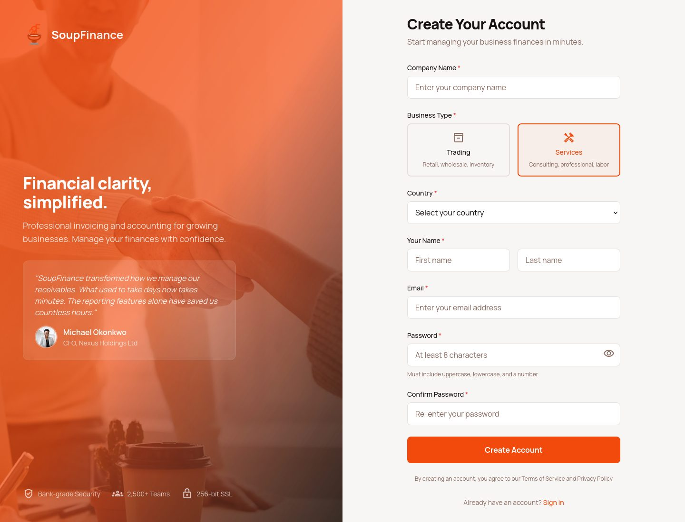
- Open the sign-in page and select Register your company.
- Type your company name exactly as you want it to appear on invoices.
- Choose your business type. Pick Trading if you buy and sell stock. Pick Services if you sell your time or expertise.
- Enter your own first name, last name and work email address.
- Choose your country of operation. This sets your default currency.
- Set a password, then type it again to confirm it.
- Select Create account.
SoupFinance then emails you a confirmation link. Open that email and follow the link to activate the account. Until you do, signing in will fail.
Sign in
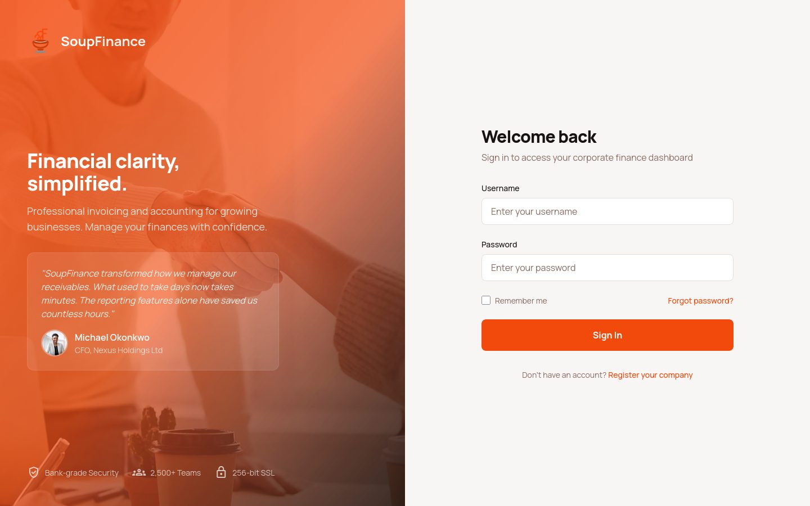
- Enter your username. This is usually your work email address.
- Enter your password.
- Tick Remember me only on a device that is yours alone. On a shared computer, leave it clear so the session ends when you close the browser.
- Select Sign In.
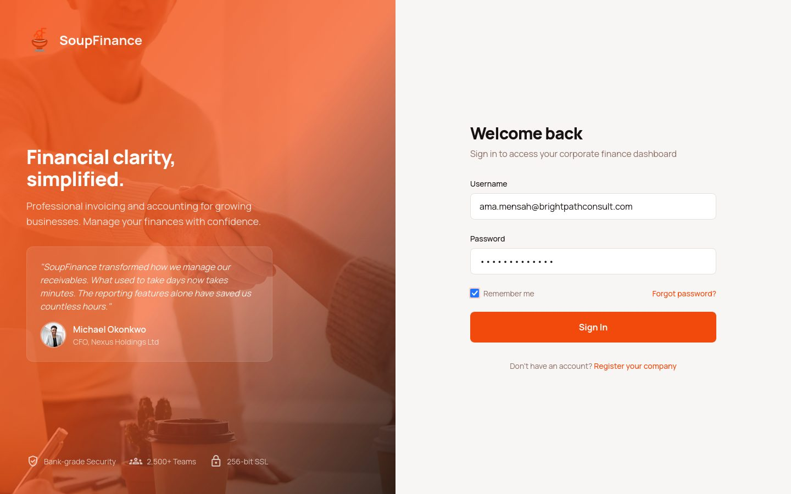
SoupFinance opens the dashboard once it accepts your details.
Reset your password
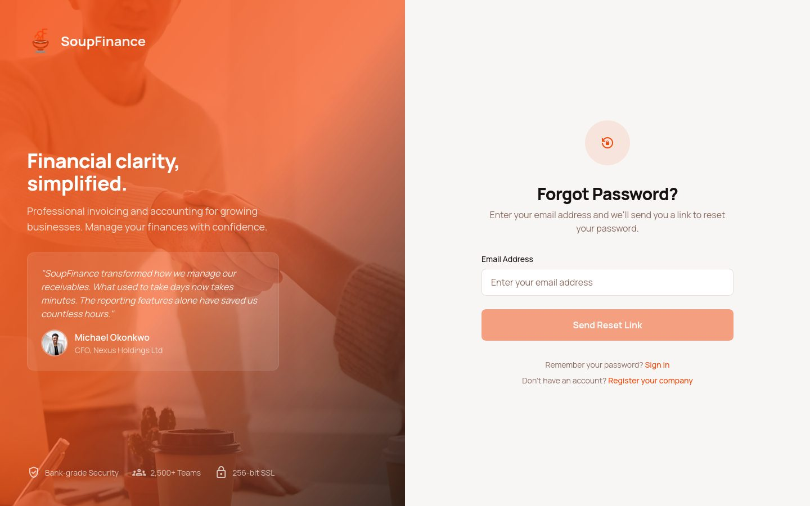
- On the sign-in page, select Forgot password?.
- Enter the email address on your account.
- Submit the form. SoupFinance emails you a reset link.
- Open the link and choose a new password.
Verify your company
Before SoupFinance can approve your corporate account, our compliance team needs to confirm who you are. This is called KYC, short for Know Your Customer. Banks and regulators require it.
Verification is a four-step wizard. SoupFinance emails you the link that opens it after you register. Each step leads to the next, and a tracker across the top shows how far you have come.
Step 1: Company information
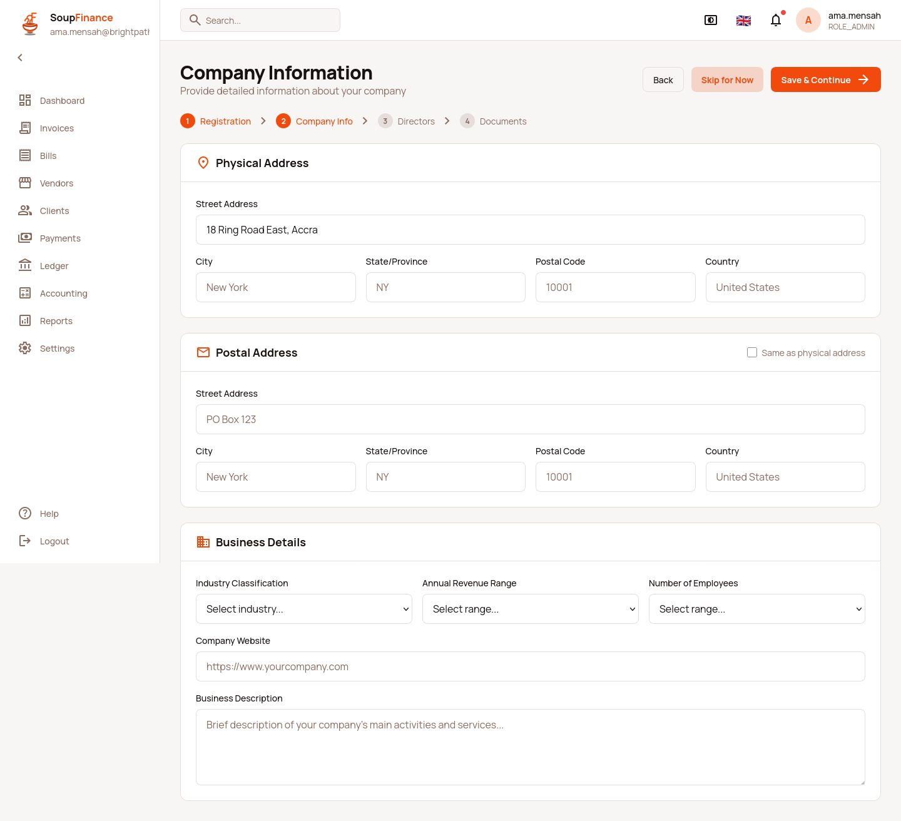
- Fill in your physical address. This is where the company actually operates.
- Fill in your postal address. If post reaches you at the same place, tick Same as physical address and SoupFinance copies it across.
- Under Business details, choose your industry, your annual revenue range and your number of employees.
- Add your company website and a short description of what you do.
- Select Save & Continue.
Step 2: Directors and signatories
List the people behind the company. That means its directors, anyone authorised to sign on the account, and any beneficial owner.
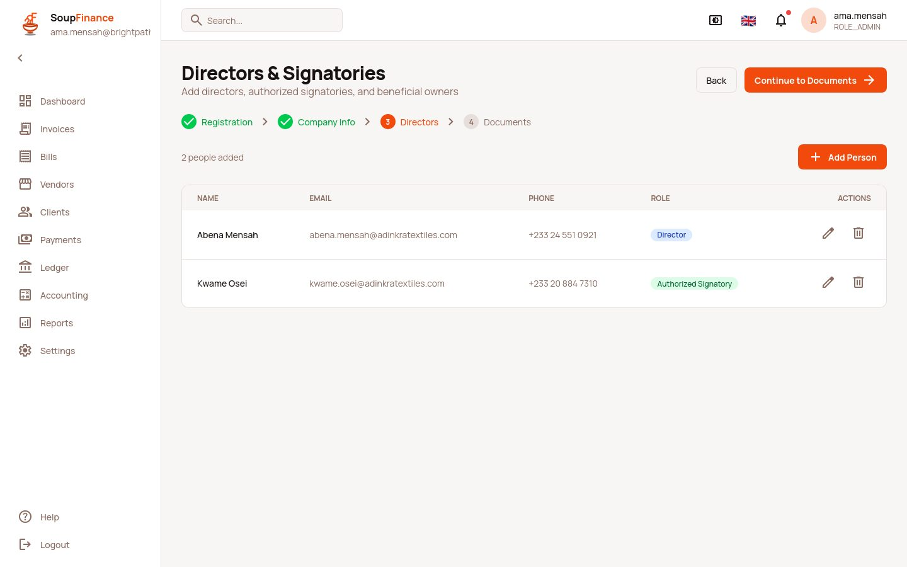
- Select Add Person.
- Enter their first name, last name, email address and phone number.
- Choose their role: Director, Authorised Signatory or Beneficial Owner.
- Save them. They appear in the table, and the count above it goes up.
- Repeat for everyone, then select Continue to Documents.
Use the pencil icon on a row to correct someone's details. Use the bin icon to remove them.
Step 3: Upload documents
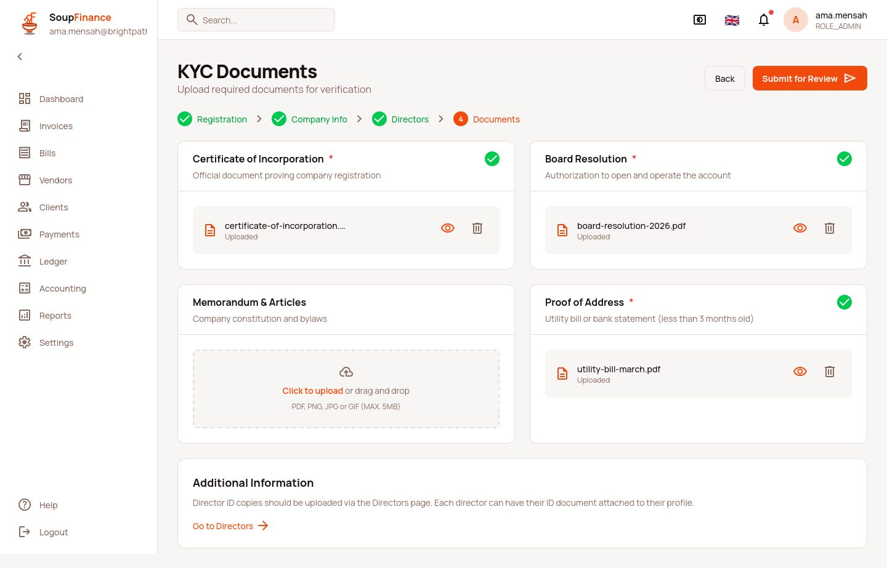
Four documents appear, each on its own card. Three are required and carry a red asterisk.
| Document | Required | What it is |
|---|---|---|
| Certificate of Incorporation | Yes | Official proof the company is registered |
| Board Resolution | Yes | Authorisation to open and operate the account |
| Proof of Address | Yes | A utility bill or bank statement less than three months old |
| Memorandum & Articles | No | The company constitution and bylaws |
- On a card, select Click to upload, or drag the file onto the card.
- Wait for the card to show a green tick and the word Uploaded.
- Repeat until all three required cards are ticked.
- Select Submit for Review.
Files must be PDF, PNG, JPG or GIF, and no larger than 5MB. Use the eye icon to check what you uploaded, and the bin icon to replace it.
Step 4: Track your application
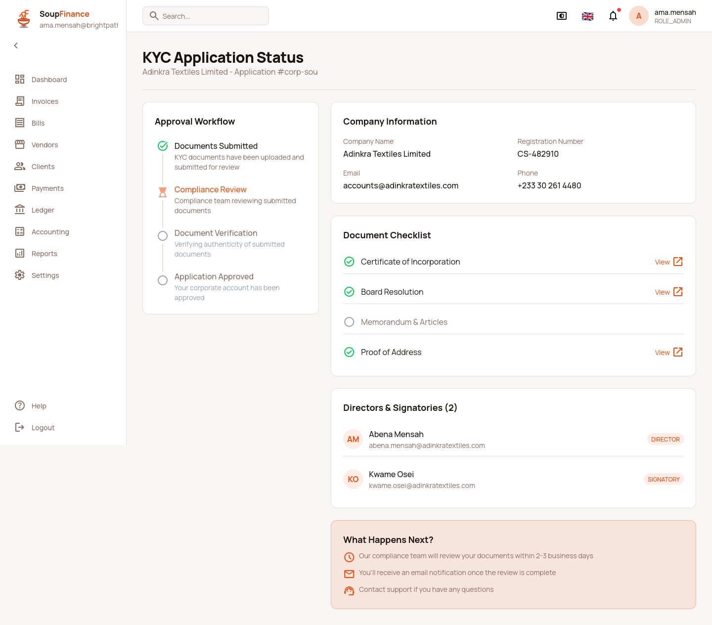
This screen is your record of the application. Return to it whenever you want to check progress. It shows your application number, the details you submitted, and which documents arrived.
The approval workflow on the left moves through four stages in order:
| Stage | What is happening |
|---|---|
| Documents Submitted | Your files reached us |
| Compliance Review | Our compliance team is reading them |
| Document Verification | We are confirming the documents are genuine |
| Application Approved | Your corporate account is approved |
A tick marks a finished stage. The stage in progress is highlighted. Review normally takes two to three working days, and we email you once it is done.
Dashboard
The dashboard is your home screen. It answers one question: how is the business doing right now?
The four cards
| Card | What it tells you |
|---|---|
| Total Revenue | What you have invoiced. |
| Outstanding Invoices | What clients still owe you, and how many invoices that covers. |
| Expenses (MTD) | What you have spent so far this month. MTD means month to date. |
| Net Profit | Revenue less expenses. |
Recent invoices
The table lists your latest invoices with their status. Select an invoice number to open it. Select View all to see the full list.
Clients
A client is a person or company you invoice. Add a client once, then reuse it on every invoice.
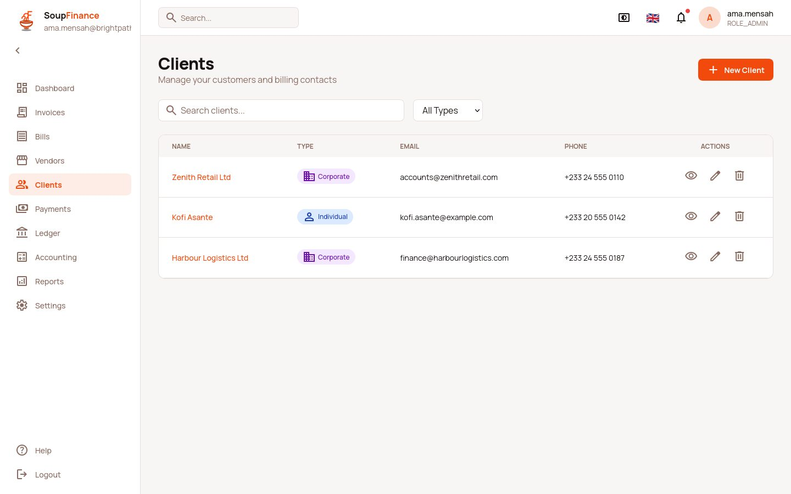
Find a client
Type part of a name in the search box. The list narrows as you type. You can also filter by client type to show only individuals or only companies.
Add a client
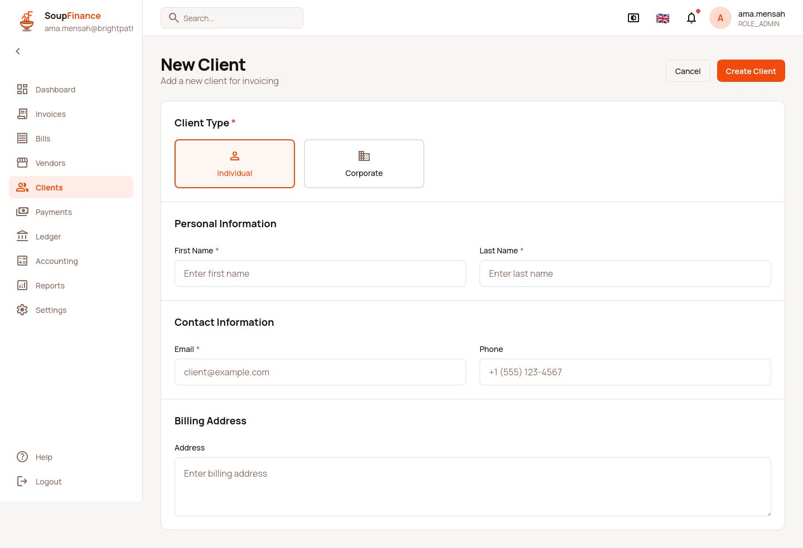
- Select New Client.
- Choose Individual for a person, or Corporate for a company. The form changes to match.
- For an individual, enter the first and last name. For a company, enter the company name and the contact person.
- Add the email address and phone number. SoupFinance uses the email when you send an invoice.
- Add the billing address, and the registration and tax numbers if you have them.
- Select Save.
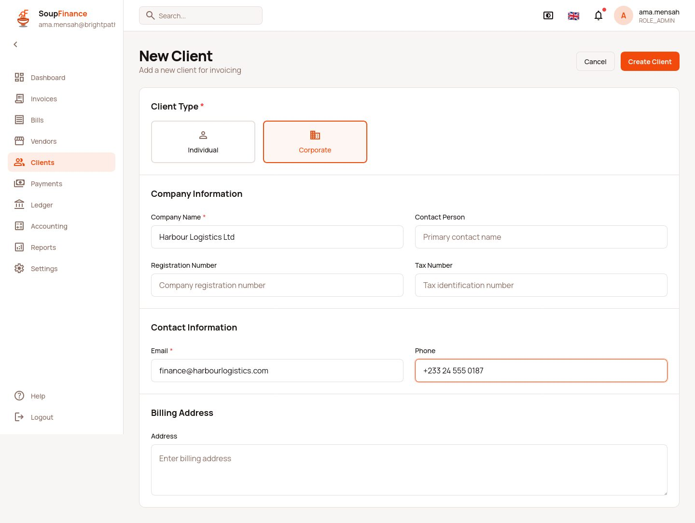
Invoices
An invoice is a request for payment you send to a client. This is where most of your revenue is recorded.
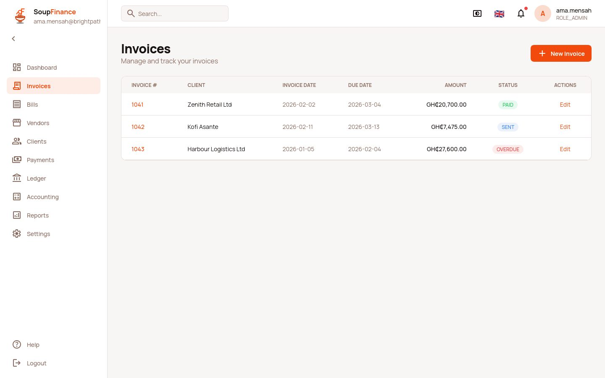
Reading the list
Each row shows the invoice number, the client, the amount and the status. Select a number to open the invoice. Select Edit to change it.
| Status | Meaning |
|---|---|
| DRAFT | Saved but not yet sent. You can still change anything. |
| SENT | Issued to the client and waiting for payment. |
| PAID | Settled in full. Nothing is outstanding. |
| OVERDUE | The due date has passed and money is still owed. |
Create an invoice
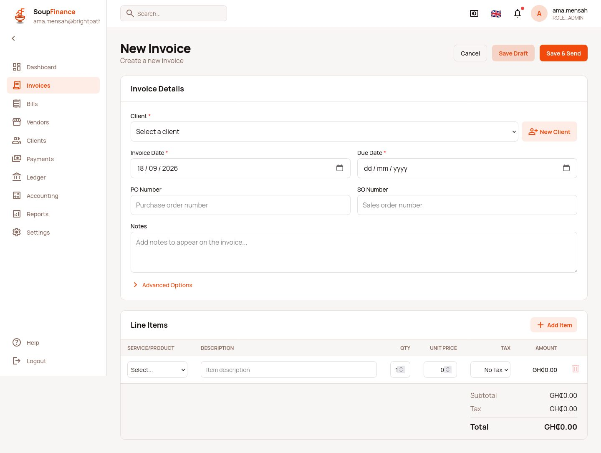
- Open Invoices and select New Invoice.
- Pick the client from the list. If they are not there yet, select New Client to add one without leaving the form.
- Check the invoice date and set the due date. The due date decides when the invoice counts as overdue.
- Add your client's purchase order or sales order number if they need one on the invoice.
- Add a line item for each thing you are charging for. Enter the description, the quantity and the unit price. Choose a tax rate where tax applies.
- Add more lines as needed. SoupFinance totals them as you type.
- Use notes for anything the client should read, such as payment terms.
- Select Save Draft to keep working on it later, or Save & Send to issue it now.
View an invoice
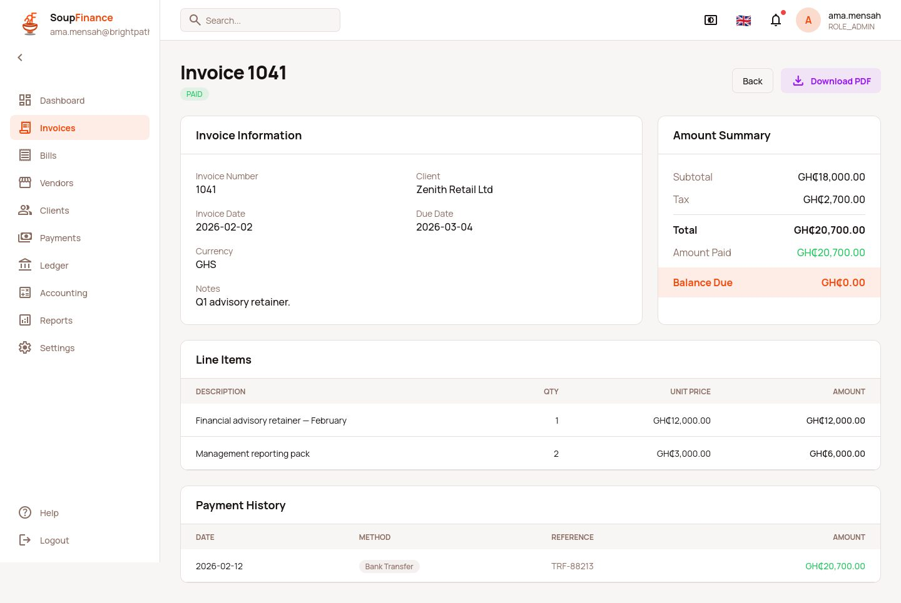
The detail page collects everything about one invoice:
- Invoice Information holds the number, client, dates, currency and notes.
- Amount Summary shows the subtotal, the tax, the total, how much has been paid and the balance still due.
- Line Items lists what you charged for.
- Payment History lists each payment received against this invoice.
Actions on this page
| Button | What it does |
|---|---|
| Download PDF | Saves a PDF copy of the invoice to your computer. |
| Send | Emails the invoice to the client as a PDF attachment. |
| Edit | Reopens the invoice for changes. |
| Back | Returns to the invoices list. |
Which buttons appear depends on the invoice status. A paid invoice cannot be edited, for example.
Vendors
A vendor is a supplier you buy from. Record a vendor once, then use it on every bill you receive from them.
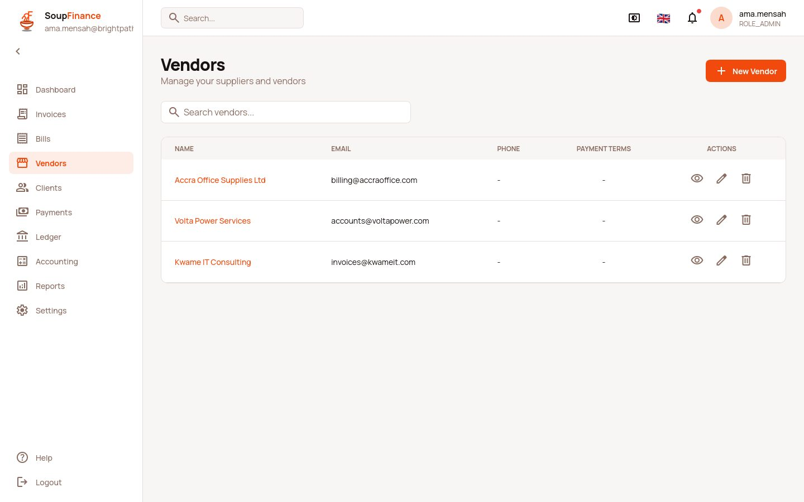
- Open Vendors and select New Vendor.
- Enter the vendor name, email address and phone number.
- Add their address and any account or tax reference you need on file.
- Select Save.
Use the search box to find an existing vendor. Select a vendor's name to see their details and what you have bought from them.
Bills
A bill is money you owe a vendor. Recording bills keeps your expenses and your payables accurate.
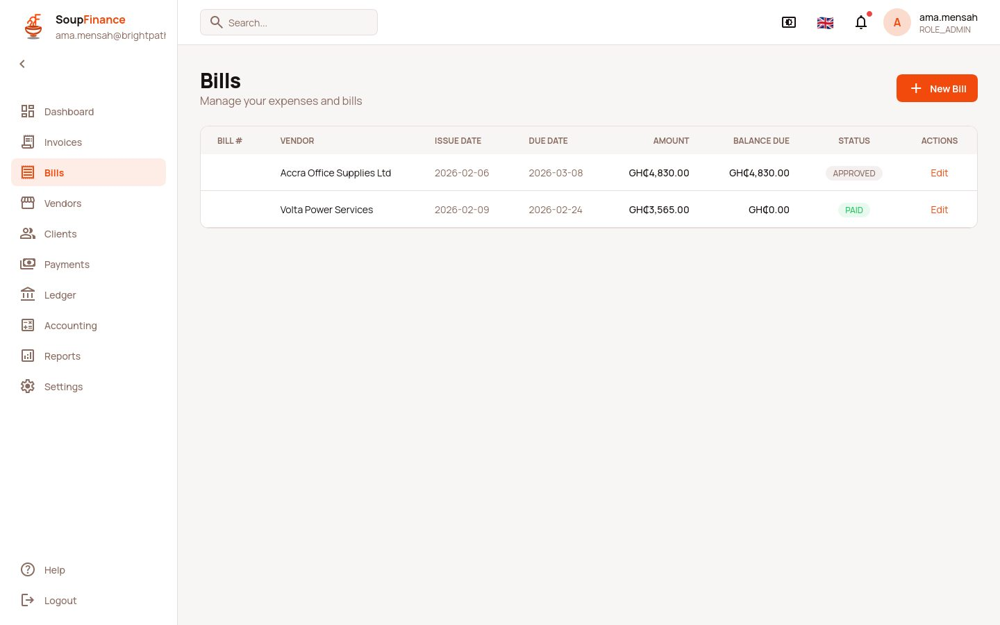
Record a bill
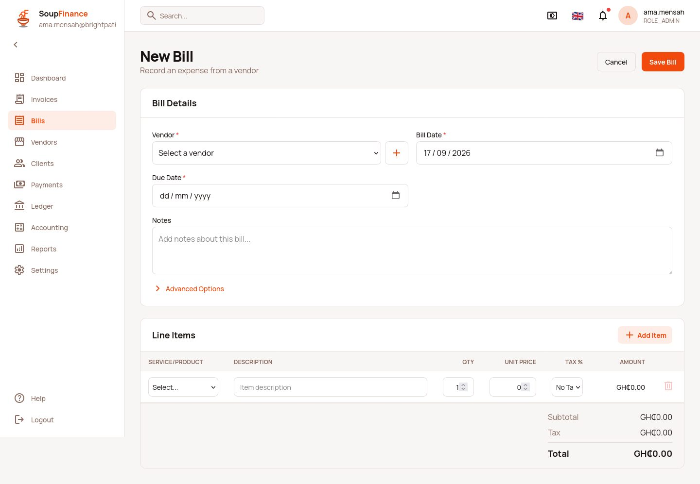
- Open Bills and select New Bill.
- Pick the vendor who sent the bill.
- Set the bill date and the due date. Copy both from the document in front of you.
- Leave the currency as your company currency unless the vendor billed you in another one.
- Add a line item for each charge, with its description, quantity, unit price and tax rate.
- Open the advanced section if you need an exchange rate, a purchase order number or a sales order number.
- Select Save.
Select a bill in the list to see its full detail, including anything already paid against it.
Payments
A payment records money that actually moved. Every payment is matched to an invoice or to a bill, so nothing floats loose.
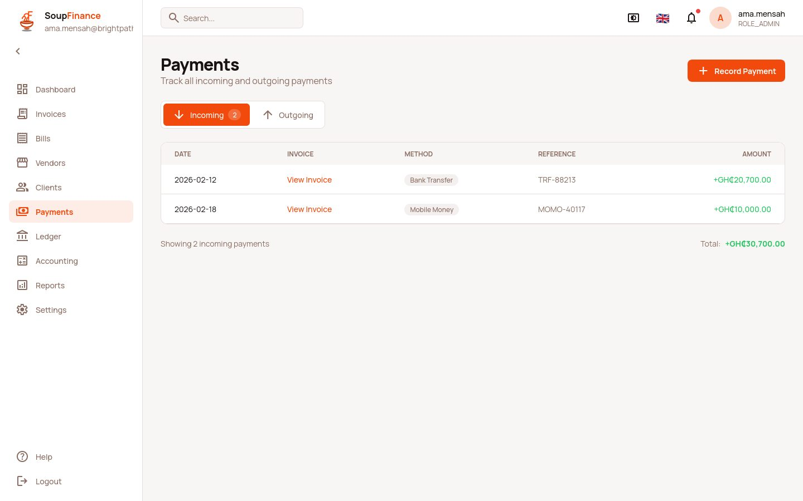
Incoming and outgoing
Two tabs split the list:
- Incoming is money your clients paid you against invoices.
- Outgoing is money you paid vendors against bills.
Each tab totals its payments at the foot of the table.
Record a payment
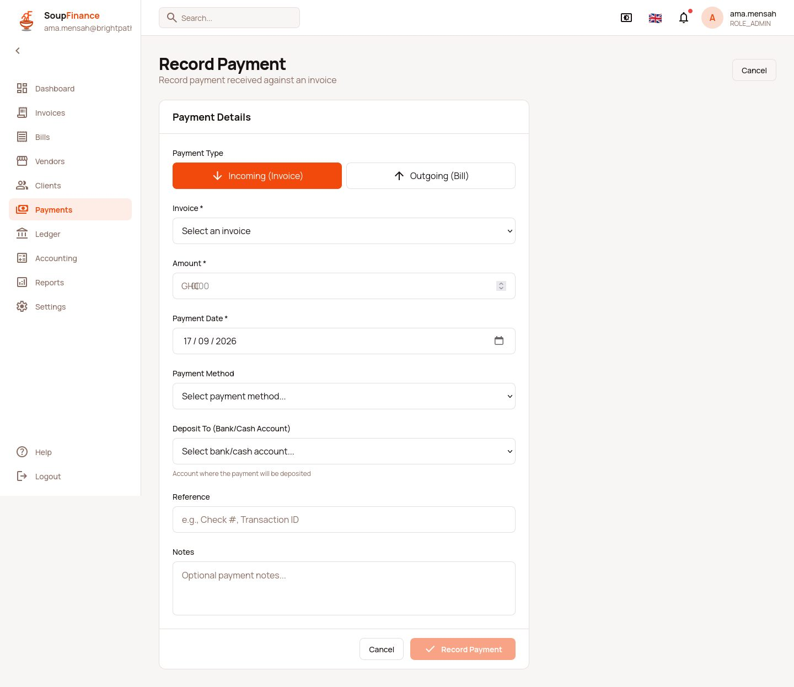
- Open Payments and select Record Payment.
- Choose whether you are paying against an invoice or a bill.
- Select the document. SoupFinance shows how much is still outstanding on it.
- Enter the amount. Select Pay full to settle the balance in one step.
- Set the payment date to the day the money moved, not the day you type it in.
- Choose the method, such as bank transfer, cash, mobile money or cheque.
- Choose the bank account the money went into or out of.
- Add the reference from your bank statement. This makes reconciliation far easier later.
- Select Save.
The invoice or bill updates straight away. Pay an invoice in full and its status becomes PAID.
Ledger
The ledger is the accounting record underneath everything else. Invoices, bills and payments all post here automatically.
Chart of accounts
The chart of accounts lists every account your books use, grouped into the five standard categories.
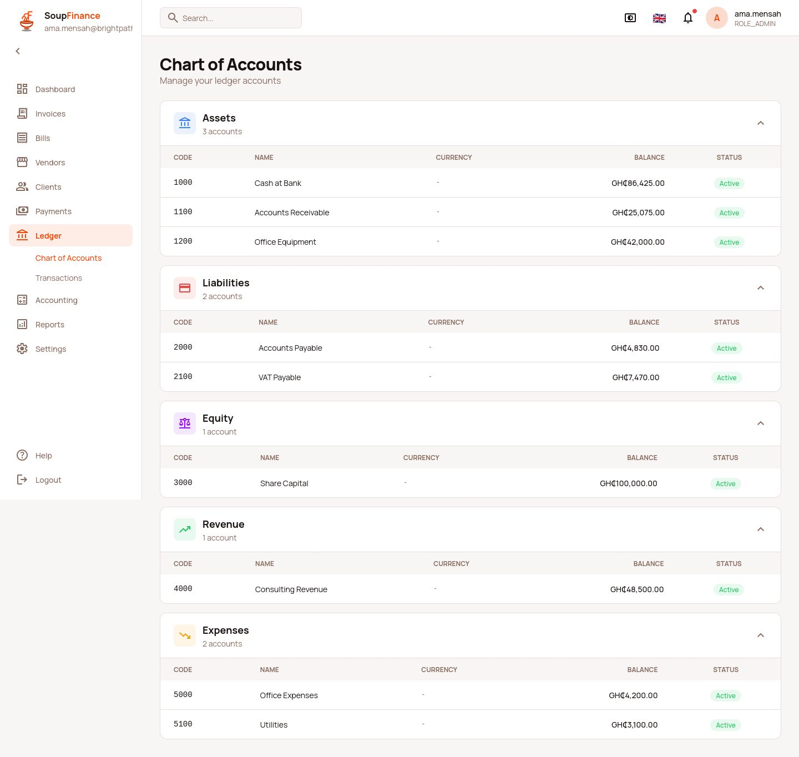
| Group | What it holds |
|---|---|
| Assets | What the business owns, such as bank balances and equipment. |
| Liabilities | What the business owes, such as unpaid bills and tax. |
| Equity | The owners' stake in the business. |
| Revenue | What the business earns. |
| Expenses | What the business spends to operate. |
Select a group heading to collapse or expand it. Each row shows the account code, its name, its balance and whether it is still active.
Ledger transactions
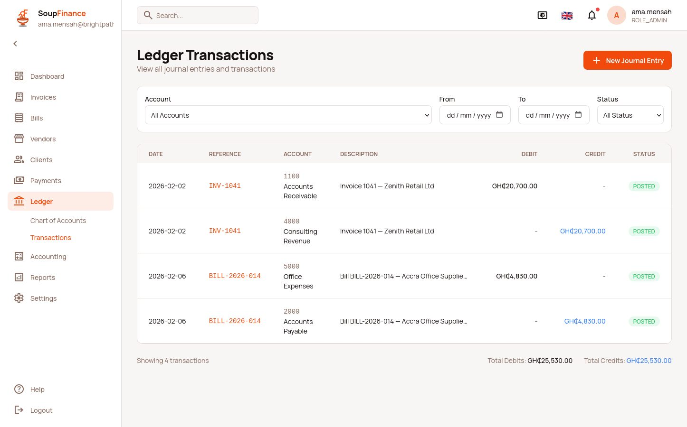
This page lists individual postings. Narrow it with the filters:
- Account shows postings against one account only.
- Start date and end date limit the period.
- Status separates drafts from posted entries.
Select Clear filters to go back to the full list. Select New Journal Entry to record a posting by hand.
Accounting
The accounting section is for entries you make yourself, rather than ones that come from an invoice or a bill.
Transaction register
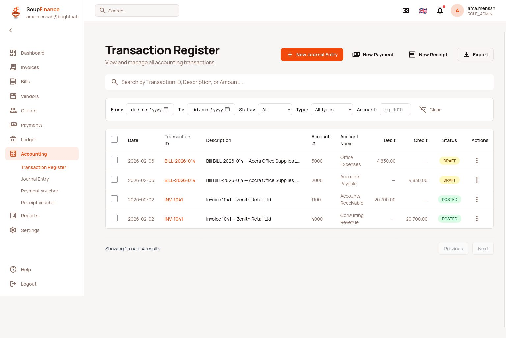
The register is one list of every accounting transaction. Search by transaction reference, description or amount. Filter by date, status, type or account code.
Tick the box on one or more rows to act on them together. You can post several drafts at once, or delete them. Select Export to download the list.
| Status | Meaning |
|---|---|
| DRAFT | Saved but not yet in the books. You can still edit or delete it. |
| POSTED | In the books and counted in your reports. |
Journal entry
A journal entry moves money between accounts directly. Use it for corrections, opening balances, depreciation and anything with no invoice behind it.
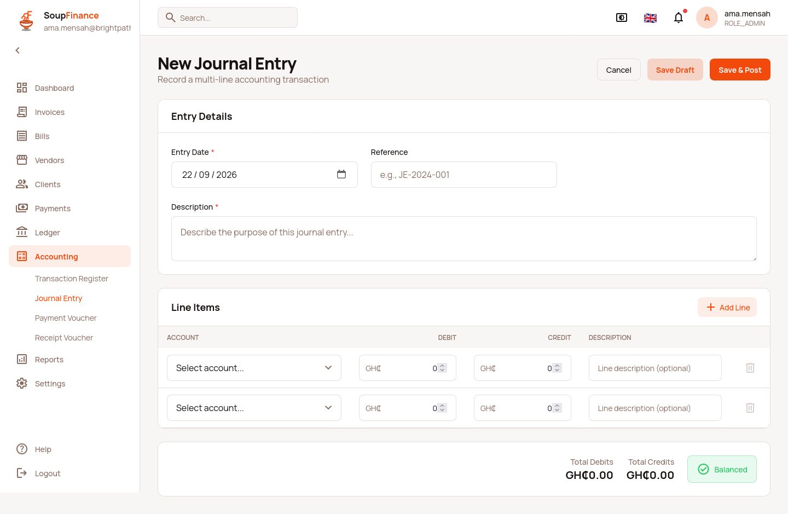
- Open Accounting, then Journal Entry.
- Set the entry date.
- Add a reference so you can find the entry again.
- Write a description explaining why you made the entry. Your auditor will thank you.
- On the first line, choose an account and enter an amount in either debit or credit.
- On the next line, choose the other account and enter the matching amount on the opposite side.
- Select Add Line if the entry needs more than two lines.
- Check the indicator at the foot reads Balanced.
- Select Save Draft to review it later, or Save & Post to put it into the books.
Vouchers
A voucher records money leaving or entering the business outside the invoice and bill cycle.
| Voucher | Use it for |
|---|---|
| Payment voucher | Money you paid out, such as petty cash or a refund. |
| Receipt voucher | Money you took in that no invoice covers. |
| Deposit voucher | Money moved into a bank account. |
- Open Accounting, then Payment Voucher or Receipt Voucher.
- Confirm the voucher type at the top. You can switch between the three types here.
- Set the transaction date and add a reference number.
- Choose the payment method.
- Describe the purpose in notes. This field is required.
- Choose the beneficiary type, then name the client, vendor or staff member.
- Select the bank or cash account the money moves through, and the expense account to charge it to.
- Enter the amount.
- Read the transaction summary at the foot. It previews the exact journal entry the voucher will create.
- Select Save Draft, or Approve & Post to put it into the books.
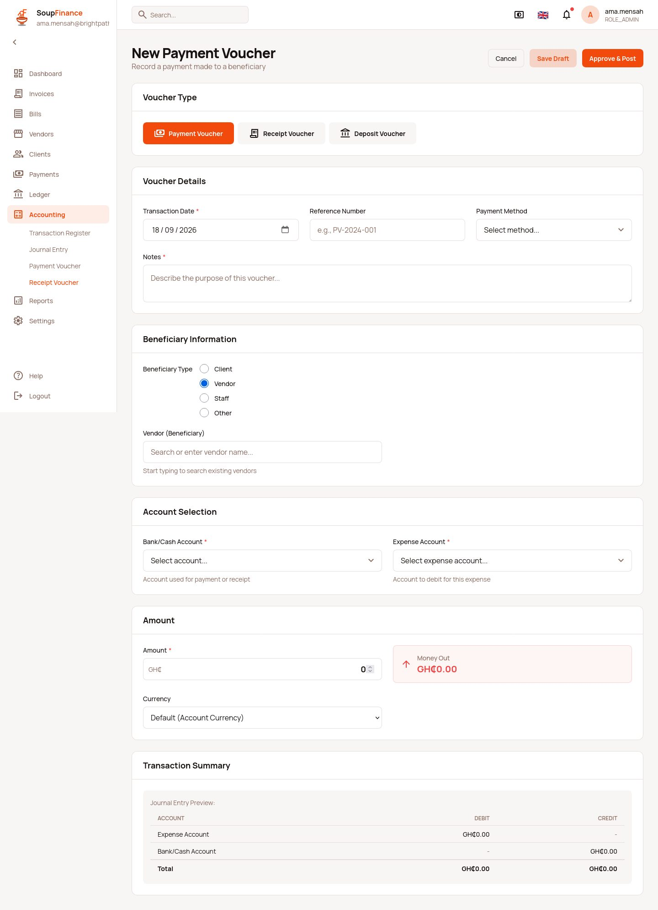
Reports
Reports turn your records into statements. They read the ledger, so they always match what you entered.
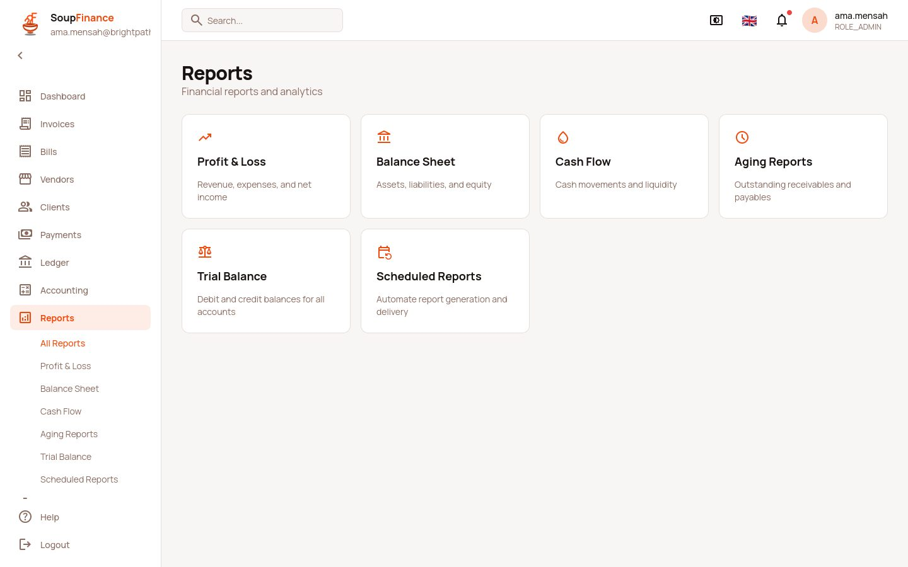
How every report works
All the statements share the same controls:
- Set the from date and to date for the period you want.
- Select Generate Report.
- Read the result on screen.
- Select PDF, Excel or CSV to download it.
Select Reset to return the dates to their defaults.
Profit and loss
This report shows what you earned, what you spent, and what was left over the period.
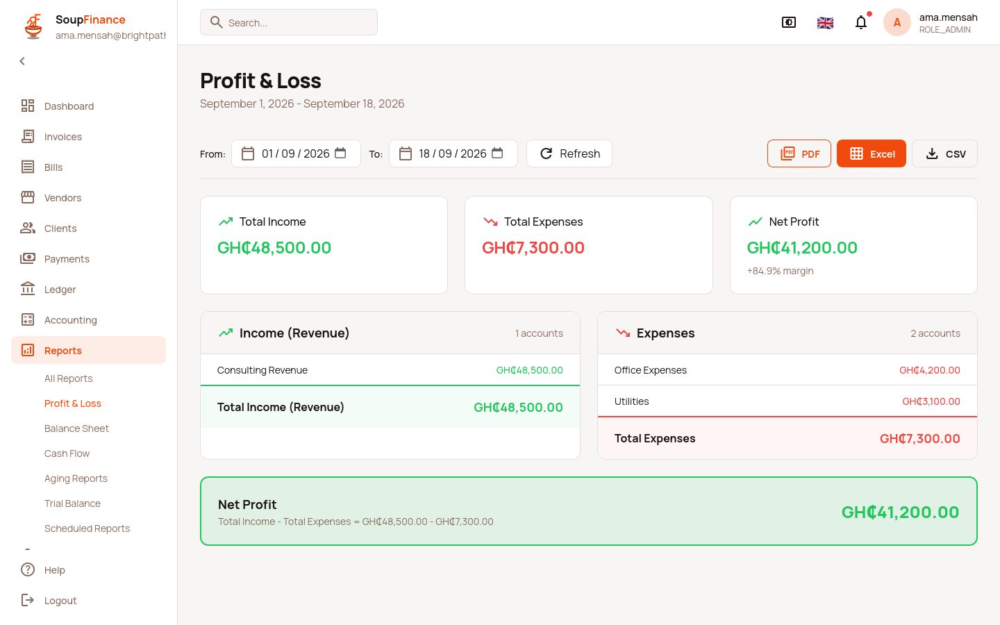
Balance sheet
This report shows what the business owns and owes on a single date.
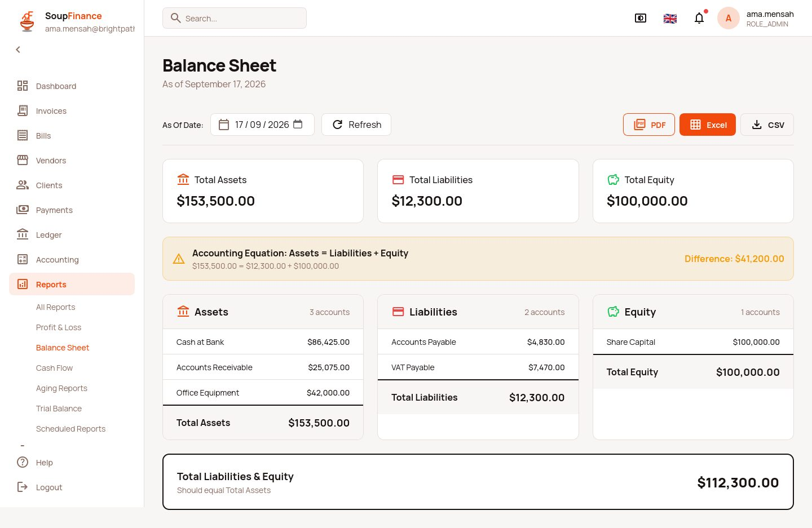
Assets should equal liabilities plus equity. If they do not, look for an unbalanced journal entry.
Cash flow
This report follows the cash itself, rather than what you invoiced. Use it to see whether the business can pay its bills.
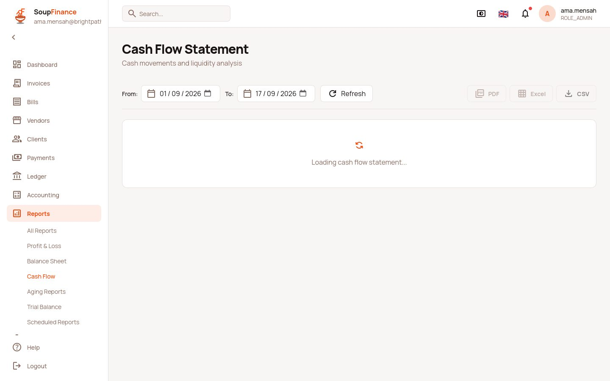
Aging reports
Aging reports sort unpaid amounts by how late they are. One page covers both sides:
- Aged receivables is what clients owe you.
- Aged payables is what you owe vendors.
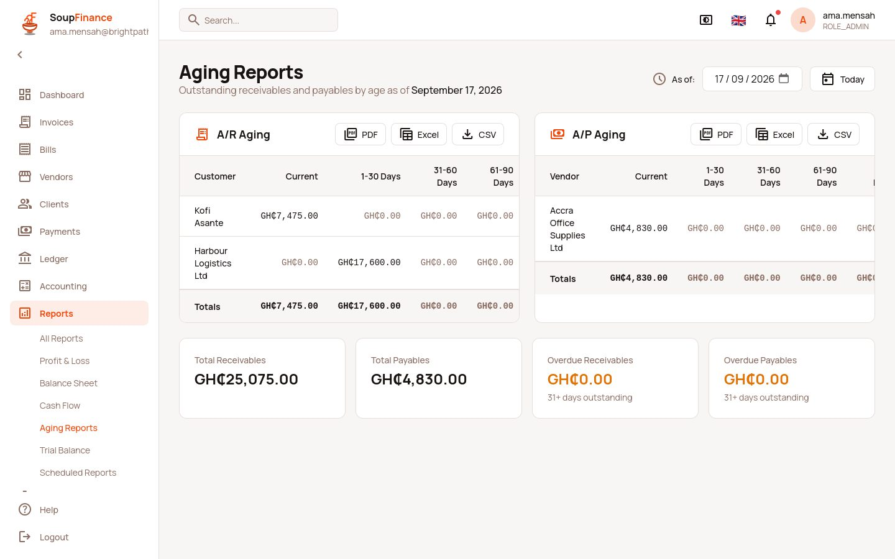
Read the columns left to right. The further right an amount sits, the longer it has been outstanding, and the sooner you should chase it.
Trial balance
The trial balance lists every account with its debit and credit balance. Accountants use it to check the books before closing a period.
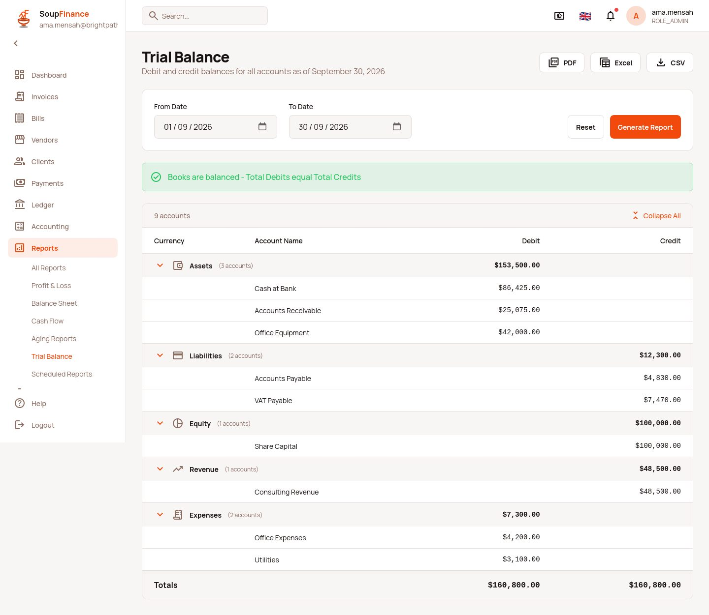
The banner near the top is the part to read first. It tells you whether the books balance. If it reports a difference, find it before you rely on any other report.
Scheduled reports
A schedule emails a report to the right people on its own, so nobody has to remember.
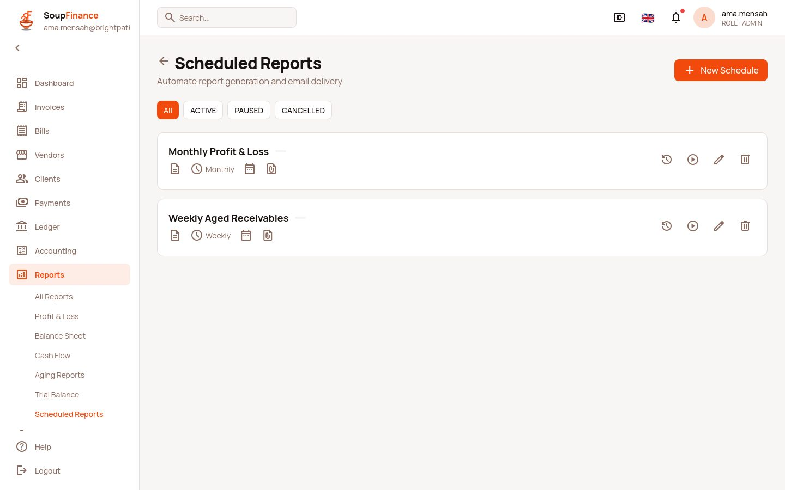
- Open Reports, then Scheduled Reports.
- Select New Schedule.
- Choose which report to send.
- Choose how often to send it, such as weekly or monthly.
- Choose the format, either PDF or Excel.
- Add the recipients by email address.
- Save the schedule.
Each schedule shows when it last ran and when it runs next. Pause a schedule to stop it temporarily, and resume it when you need it again.
Settings
Settings holds everything about your company rather than your transactions. Three tabs divide it up.
Users
This page lists everyone who can sign in, and what each of them may do.
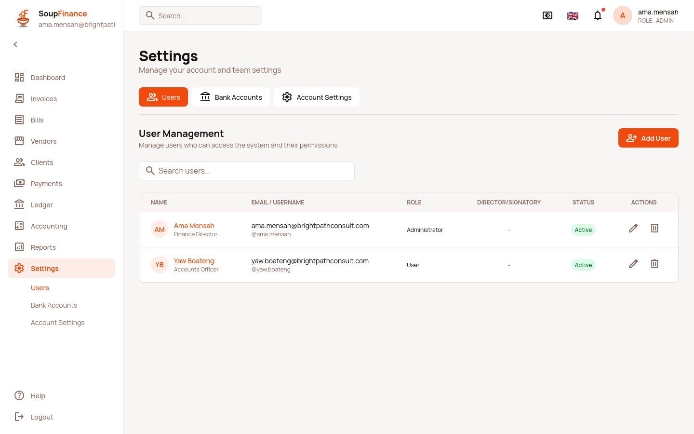
- Open Settings, then Users.
- Select Add User.
- Enter their first name, last name and job title.
- Enter the email address they will sign in with.
- Choose a role. An administrator can change settings and manage users. A user works with the day-to-day records.
- Mark them as a director or signatory if your company needs that on record.
- Save the user. They receive an email inviting them to set a password.
Use the pencil icon on a row to edit someone, and the bin icon to remove them.
Bank accounts
Record each bank account your business uses. Payments are matched to these accounts.
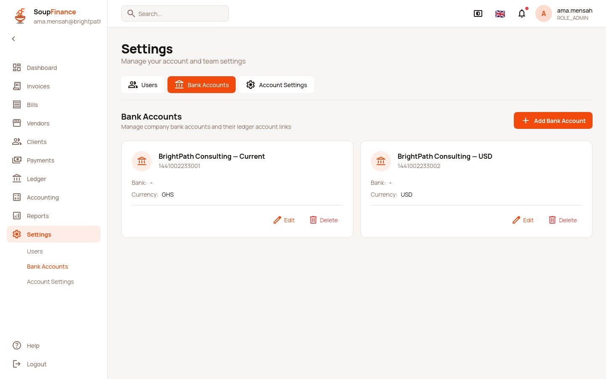
- Open Settings, then Bank Accounts.
- Select Add Bank Account.
- Enter the account name and account number.
- Choose the bank and type in the branch.
- Add the SWIFT code if you receive money from abroad.
- Choose the account currency.
- Select Save.
Company settings
These settings shape the whole application. Your currency, your business type and your branding all live here.
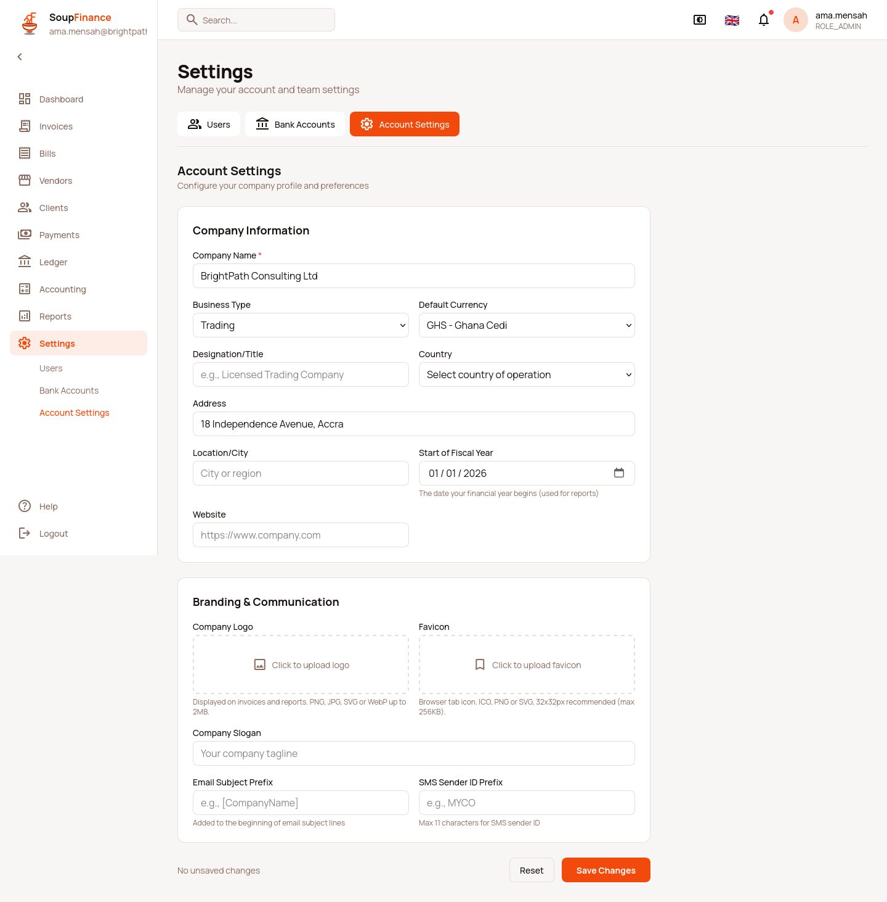
| Setting | What it affects |
|---|---|
| Company name | The name printed on invoices and reports. |
| Business type | Which features appear. Services companies do not see Vendors. |
| Default currency | The currency every amount is shown in. |
| Country | Your country of operation. |
| Address | The address printed on invoices. |
| Start of fiscal year | The date your financial year begins. Reports use it. |
| Company logo | The logo on your invoices and reports. |
| Favicon | The small icon on the browser tab. |
| Email subject prefix | Text added to the front of emails SoupFinance sends. |
Change what you need, then select Save Changes. Select Reset to discard your edits. The hint beside the buttons tells you whether anything is still unsaved.
Support
Common questions
A menu entry I expected is missing
Two things hide a menu entry. Your role may not include it, or your business type may not use it. Ask your administrator to check both.
A page says a module is not enabled
Some features are switched on per company. The message means the feature exists but is not part of your plan. Your administrator can request it.
My report shows nothing
Check the date range first. A report covering a period with no transactions is correctly empty. Widen the dates and generate it again.
An invoice total looks wrong
Open the invoice and check each line item. Tax is set per line, so one line without a rate will pull the total down.
My trial balance does not balance
Look for a draft journal entry that was posted while unbalanced. The transaction register lists every entry with its status.
I have been signed out unexpectedly
Sessions end after a period of inactivity. Sign in again. Tick Remember me on your own device to stay signed in longer.
Getting more help
Select Help at the foot of the left menu. If you still need a hand, contact your company administrator, who can reach SoupFinance support on your behalf.